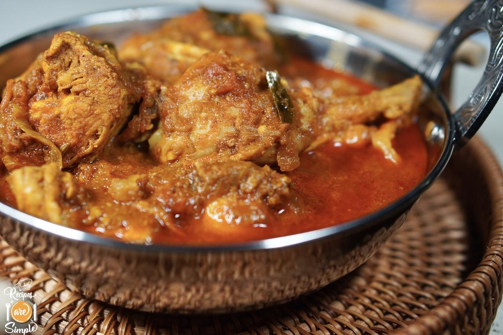

<!DOCTYPE html>
<html lang="en">

</html> 
<head>
    <meta charset="UTF-8">
    <title>Chicken Curry Recipes</title>
</head>
<body>
<a href="../index.html">HOME</a>    
<h1>Chicken Curry Recipes</h1>  

<p><h2>Descriptions</h2></p>
<p>A flavorful and aromatic chicken curry made with tender chicken pieces simmered in a rich, spicy sauce. Perfect with rice or naan.</p>

<p><h3>Ingredients</h3></p>
<ul>
    <li>500g chicken (cut into pieces)</li>
    <li>2 tbsp vegetable oil</li>
    <li>1 large onion (chopped)</li> 
    <li>2 cloves garlic (minced)</li>
    <li>1-inch piece ginger (grated)</li>
    <li>2 tomatoes (chopped)</li>
    <li>2 tsp curry powder</li>
    <li>1 tsp turmeric powder</li>      
    <li>Salt to taste</li>
    </ul>
    

<p><h3>Steps</h3></p>   
<ol>
    <li>Heat oil in a large pan over medium heat.</li>
    <li>Add chopped onions and sauté until golden brown.</li>
    <li>Add minced garlic and grated ginger; cook for 1-2 minutes.</li>
    <li>Add chopped tomatoes, curry powder, turmeric, and salt; cook until tomatoes soften      .</li>
    <li>Add chicken pieces; stir well to coat with the spice mixture.</li>
    <li>Cover and cook on low heat for about 20-25 minutes, stirring occasionally, until chicken is cooked through and tender.</li>
    <li>Adjust seasoning if needed.</li>
    <li>Serve hot with rice or naan, garnished with fresh cilantro if   desired.</li>
</ol>

</body>           